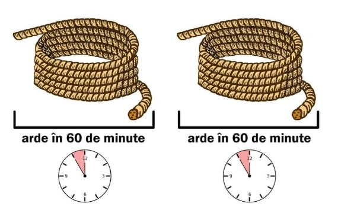

Ai cu tine doar două sfori și o cutie de chibrituri. Se știe că fiecare sfoară fiind aprinsă la un capăt arde timp de o oră. În plus, ambele sfori ard neuniform, cu alte cuvinte o jumătate de sfoară poate să ardă în 40 de minute, iar a doua jumătate deja în 20 de minute. Cum să măsori 45 de minute cu ajutorul acestor sfori?
